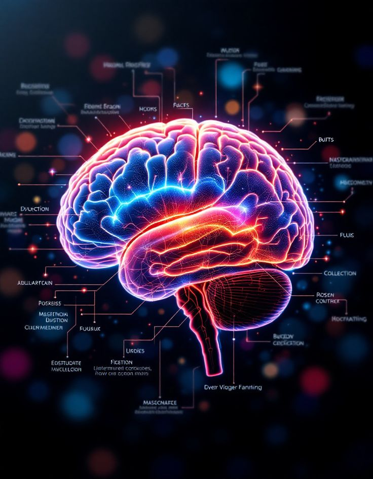

Conceptos clave de la IA
Aprendizaje automático o 'Machine Learning' :
Imagina un ordenador que aprende sin ser programado explícitamente. Eso es lo que hace el Machine Learning. Este es una rama de la IA que permite que las máquinas se vuelvan mejores en la realización de tareas a medida que obtienen experiencia. La clave está en los datos; los algoritmos de Machine Learning utilizan información como entrada para predecir nuevos resultados, como si de magia se tratase.
Lo interesante es que el Machine Learning se divide en tres categorías principales:
- Aprendizaje supervisado: aquí, los datos de entrenamiento incluyen respuestas conocidas, es decir, se les dice a las máquinas lo que se espera. Piénsalo como un profesor enseñando a un alumno con respuestas de ejercicios de matemáticas.
- Aprendizaje no supervisado: en este caso, los datos de entrenamiento no incluyen respuestas conocidas. La máquina debe descubrir patrones o estructuras por sí misma, como si se tratase de un detective.
- Aprendizaje por refuerzo: este tipo de Machine Learning implica que las máquinas tomen decisiones secuenciales para maximizar una recompensa a lo largo del tiempo. Por así decirlo funcionan a base de ensayo y error.

Redes Neuronales :
Una red neuronal es una serie de algoritmos o instrucciones que, en su esencia, imitan el diseño básico del cerebro humano. Conformada por neuronas interconectadas, estas unidades fundamentales reciben información, la procesan y generan una respuesta.
Están organizadas en distintas capas: una capa de entrada que recibe los datos, varias capas ocultas que procesan estos datos y una capa de salida que da la decisión o respuesta final, que es la que tú acabas viendo y te resulta tan increíble porque es justo lo que buscabas.
Por ejemplo, subes una foto con una imagen de un gato a una herramienta como puede ser ChatGPT, y le preguntas qué animal es. Esta la procesará y te dará una respuesta afirmando que, efectivamente, se trata de un gato.
Lo más importante de ellas es su capacidad para aprender de manera autónoma, sin necesidad de que haya un programador continuamente ajustando las tuercas de la máquina. Una vez que consigues entrenarla bien y que sea perfecta, aunque le añadas nuevos datos en el futuro, es la clave de su éxito.

Aprendizaje profundo o 'Deep Learning' :
Ahora, un paso más allá está el Deep Learning que es una rama dentro del Machine Learning, pero con grandes mejoras. Aquí, las máquinas utilizan redes neuronales artificiales con múltiples capas para procesar datos de una manera que imita el funcionamiento del cerebro humano.
Estas redes neuronales profundas pueden comprender datos no estructurados, como imágenes y texto, de manera muy precisa. Piénsalo de esta forma: si el Machine Learning es como aprender a andar en bicicleta, el Deep Learning es como convertirse en un acróbata en bicicleta que realiza todo tipo de trucos.